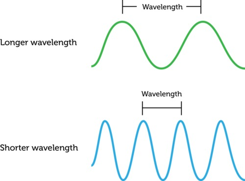

# The Fundamentals of Sound ### Will Styler - LIGN 113 --- ## Now we're pivoting into sound - We're going to focus on the elements of sound that are crucial for understanding hearing. - ... and we'll skip some of the other fun stuff! --- ### Today's Plan - What are the properties of sound? - How can we visualize them? --- ### Sound is compression and rarefaction in a medium <img class="r-stretch" src="phonmedia/sound_diagram.jpg"> --- ### ... but we need to talk about it more concretely! --- ### The Key Properties of Sound - Duration - How long does it last? - Amplitude - How powerful is it? - Frequency - How often does it cycle? - Period - How long does a single cycle take? --- ### Key Properties Continued - Wavelength - How far can the wave travel in a single cycle? - What is the physical distance between peaks? - Phase - That's next time! --- ### Duration - We talk about sounds in Milliseconds - 1 second (s) = 1000 milliseconds (ms) - Half a second (0.5 s) = 500 milliseconds (ms) - One Quarter second (0.25 s) = 250 ms - 1 meter = 1000 millimeters - Duration is kind of boring for this class - ... but very important for language and survival --- <img class="r-stretch" src="phonmedia/200Hz.jpg"> --- ### Amplitude - What is the difference in pressure between compressions and rarefactions? - We talk about Amplitude in Decibels - We'll get there soon! --- <img class="r-stretch" src="phonmedia/200Hz.jpg"> --- <img class="r-stretch" src="phonmedia/200HzHigherAmplitude.jpg"> --- ### Amplitude is related to loudness - Loudness is the *perceptual correlate* of amplitude - Generally, when amplitude goes up, so does perceived loudness - **It's super complicated!** - More on this later --- ### Conceptualizing Amplitude - Why is dropping a small book quieter than dropping a large one? - Why can high amplitude sound be damaging and shatter windows? - How does a car muffler work? --- <img class="r-stretch" src="hearing/muffler.jpg"> --- ### Period - How long does a single cycle last? --- <img class="r-stretch" src="phonmedia/200Hz.jpg"> --- <img class="r-stretch" src="phonmedia/200Hz.jpg"> - Here, 0.005 seconds (5 ms) <audio controls src="phonmedia/200Hz.wav"></audio> --- <img class="r-stretch" src="phonmedia/400Hz.jpg"> --- <img class="r-stretch" src="phonmedia/400Hz.jpg"> - Here, 0.0025 seconds (2.5ms) <audio controls src="phonmedia/400Hz.wav"></audio> --- ### Frequency - "How many times does the sound cycle in one second?" - Measured in 'Hertz' (Hz), also known as 'Cycles per second' - 'How many periods can fit in one second?' --- # f = 1/t - f = Frequency in Hz - t = Period in Seconds --- <img class="r-stretch" src="phonmedia/200Hz.jpg"> --- <img class="r-stretch" src="phonmedia/200Hz.jpg"> - Period = 0.005 seconds - Frequency = 1/0.005 = **200 Hz** --- <img class="r-stretch" src="phonmedia/400Hz.jpg"> - Period = 0.0025 seconds - Frequency = 1/0.0025 = **400 Hz** --- <img class="r-stretch" src="phonmedia/400Hz.jpg"> - Period = 0.0025 seconds - Frequency = 1/0.0025 = **400 Hz** --- ### Greater period = Lower Frequency! - Longer cycles == Fewer Cycles per Second --- ### Frequency is related to pitch - Pitch is the perceptual correlate of frequency - Generally, when frequency goes up, so does perceived pitch - It's complicated! - More on this later! --- ### Wavelength - "How far does the wave travel during a single cycle?" --- ### Calculating Wavelength requires two pieces of information... - How fast is it moving? - At the speed of sound! (343 meters per second) - How often per second does it cycle? - That's the frequency! --- ### It makes sense that frequency is involved  --- ### Wavelength is... - Meters per second / Cycles per second - You then get meters per cycle! --- # λ = c/f - λ = Wavelength in Meters - c = Speed of Sound in Air (343 m/s for this class) - f = Frequency in Hz --- <img class="r-stretch" src="phonmedia/200Hz.jpg"> - Period = 0.005 seconds - Frequency = 1/0.005 = **200 Hz** - Wavelength = 343/200 = **1.715 Meters** --- <img class="r-stretch" src="phonmedia/400Hz.jpg"> - Period = 0.0025 seconds - Frequency = 1/0.0025 = **400 Hz** - Wavelength = 343/400 = **0.857 Meters** --- ### Lower Frequencies have longer wavelengths --- ### Conceptualizing Wavelength - Why does a double-bass play lower notes than a violin? - Why do subwoofers need to be bigger? - Why do you hear your neighbors' bass, but not their treble? - There are also differences in reflection of low vs. high frequencies --- ### Period, Frequency, and Wavelength are all related - Frequency is calculated from period, wavelength from frequency --- ### Amplitude and Duration are not related to any other element! - Nor to each other! --- ### We can find these things out for any sound! <img class="r-stretch" src="phonmedia/100+200.jpg"> --- <img class="r-stretch" src="phonmedia/100+200.jpg"> - Amplitude ≈ 0.4 - Duration = ?? - Period = 0.01 seconds - Frequency = 1/0.01 = 100 Hz - Wavelength = 343/100 = 3.43 meters --- ### Wrapping Up - All sounds have amplitude, duration, periods, frequencies, and wavelengths - Many of these things are related to one another - These properties have real consequences for how sound actually works! --- ### For Next Time - What was up with that last sound? - And why was it so bumpy? --- <huge>Thank you!</huge>